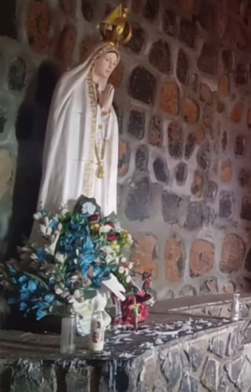

Vivre l'Expérience Spirituelle

La Grotte Mariale
Un lieu de recueillement silencieux pour confier vos secrets à Marie.

Fresques Sacrées
Une œuvre d'art monumentale dédiée à la protection de la Vierge.

Pèlerinages Annuels
Rejoignez les processions aux flambeaux sous le ciel des montagnes.